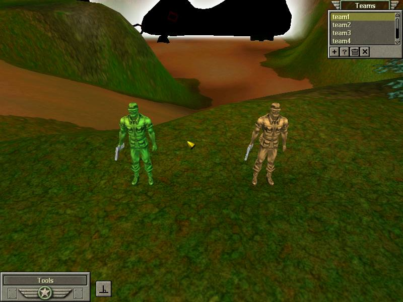
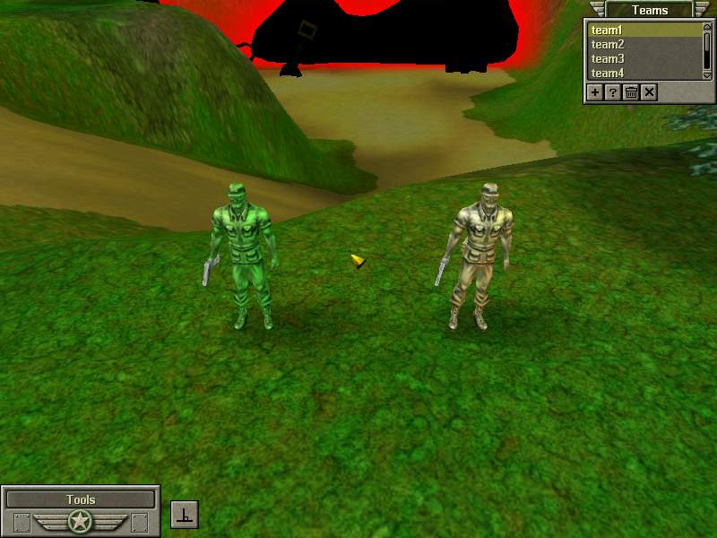

The Light Editor is used to modify the lighting colors based on specific times of day. Although time no longer passes natively in Army Men RTS, you can still adjust the current time of day, and by effect, adjust the colors of the sun and ambiance with it.
The sliders on the left adjust different aspects of the day / night timing cycle. As time no longer passes in Army Men RTS, the only two settings you'll need to ever worry about are the Start time and the Season.
How long, in seconds, a day cycle would last.
The fraction of a cycle at which the mission starts at. So 0.5 would mean the mission starts at 12 PM.
The fraction of a cycle at which day begins.
The fraction of a cycle at which night begins.
The fraction of a cycle at which the sun begins to rise.
The fraction of a cycle at which the sun has finished rising.
The fraction of a cycle at which the sun begins to set.
The fraction of a cycle at which the sun has set.
"based on spring/summer/winter/fall." Not sure what this does exactly, but it influences the direction of the sun.
Without the passage of time, the most these settings will do is affect which direction the sun faces, meaning which direction shadows are drawn. You can mess with them if you like, but you'll get more mileage out of the lighting colors.
This is where you're most likely going to go when it comes to changing a map's lighting. The fraction colors determine what colors the three ambient lights will be during a specific time of day. The list in the middle of the window lists all of the currently defined fractions. To the right, you'll be able to preview the three colors throughout the day cycle. Lastly, along the bottom of the window is a row of buttons used to edit the fraciton colors.
By default, there will already be a single defined fraction, and it will already be highlighted on the list. Click on the "Edit" button to edit the three ambient colors of the fraction. This will open a second window. Here you can adjust the fraction of day these colors appear at, as well as change the colors themselves. To edit the colors, click on the icon to the right of their respective labels.
The three colors each refer to different sources of light. The sun color is the most obvious: It is the color that sunlight casts. It is best to leave it as pure white. The ambient color can be seen as the opposite of the sun color. It is the color seen in the absence of light, or basically, the color of shadows. It is the most prominent color of the map's lighting, and should be adjusted with care. Lastly, the fog color is the color that the far plane blends into. It is mostly only seen during cutscenes, although there are circumstances where it can be seen during gameplay.
Some examples. In each of these images, the respective color has been set to red, while the other two colors are set to white. From left to right: ambient color, sun color, and fog color.
 By adding new fractions, the color of both fractions will occur at their respective times of day. For the times between fractions, colors will be seamlessly blended. This creates the effect, for example, of the sunlight fading away as it sets or rises again. However, since time does not pass in Army Men RTS, the most you can do with this is create two fractions, then set time of day to a point inbetween the two fractions, resulting in a blended color.
Lastly, the row of buttons on the bottom of the window all pertain to editing fractions.
{kind=link}
{kind=link}
{kind=link}